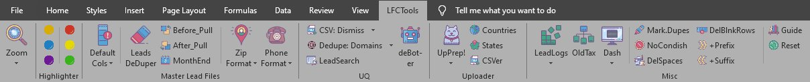

LFCTools Documentation
This is a documentation on the LFCTools.
The LFC tools is an Excel addin which contains a collection of macros (or helpers) written in VBA. These helpers perform task/s and do what should have been a long and repetitive action in a short time - with just a click of a button. The addin is designed to be unobtrusive yet always available if need arise.
Users can download the latest copy of the LFCTools through the repository. Updates and new features is delivered in the same way.
For the list of (New and Historical) features check out What's New? page.

How to Use
There are two (2) ways to install and use the LFCTools addin:
-
Temporary or One-Time Use
- This allows the addin to be used for the current session only. This means that as soon as the user closes the Excel application the addin is also unloaded.
- This is done by simply opening (or double-clicking) the lfctools.xlam file. This will open up the Excel application and the "LFCTools" tab will be visible in the Excel ribbon. Remember that this is temporary use of the LFCTools.
-
Permanent or Install-and-Forget
- This allows the addin to be available everytime the Excel application is used.
- To install:
a. Just run the installer or use the installer.bat file. b. Then open a blank document in Excel application and navigate to: File > Options > Add-ins. Then at the bottom of the page under "Manage:" click "GO" - the drop-down should be "Excel Add-ins" by default. You can also do this by combined keypress: ALT + T + I. The Add-ins window should have appeared; check the box which says "LFCTools" then click "OK". The "LFCTools" tab will now be visible in the Excel ribbon.
Note
Everytime the LFCtools is updated users should redo the 1st step (step a). see Installation Dependencies for technical stuff.
Limitations
The LFCTools is far from perfect. As of current the following are its limitations:
- No Undo - once a tool is executed there is no way to reverse (CTRL+Z) your changes. It's a touch-move!
- Custom Templates - some campaigns require mapping for MLFs; this is something that the tool does not handle...yet.
- Changes - like everything else, the tools is not immune to changes. Most of the macros assume the placement of headers or columns if there are changes to the current reports that the Admin provides the tool will also be affected. This does not affect all though.
Known Issues
In the course of development, the LFCTools have had some issues that still persist today. Although the tool is optimized regularly the issues are still experienced from time to time. Please keep the following issues in mind.
- Highlighter Crash - Using the highlighter when the some of the cells are hidden, filtered or sorted causes excel to crash.
- Find-Bug - There are instances when Excel's find feature can't seem to "find" things even if what's being looked-for is obvious (or known). This seems to have been rectified in one of the code optimization, still be on the lookout especially when checking TALs.
- Missing Addin - This was experienced during the early days of the tool where the addin goes missing. This has been rectified though it might choose to test you in the future.
- Sluggish Excel - This too was experienced during the early days of the tool. The code optimization have improved the overall performance of the tool.
Should you experience the above issues try the "refresh" tool or a restart of the Excel application will solve the problem.